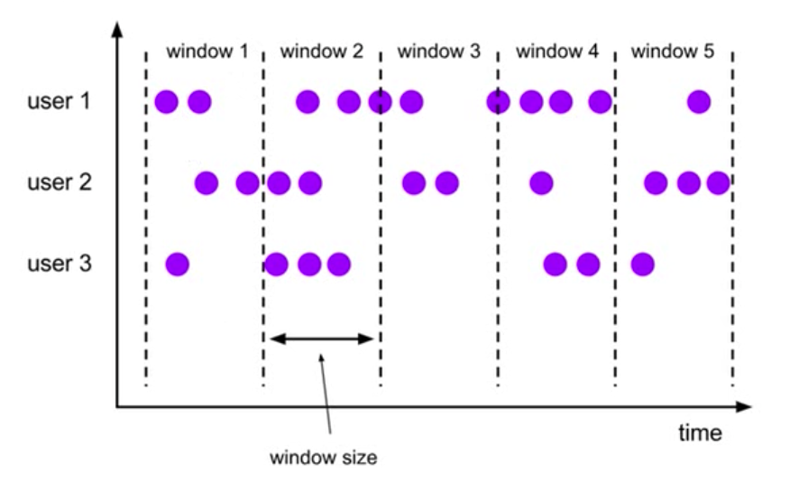
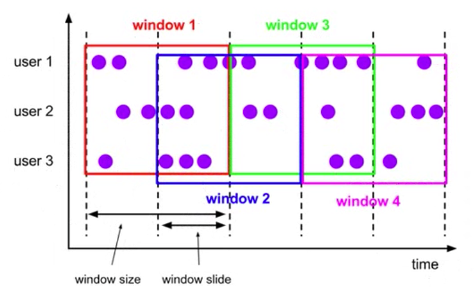
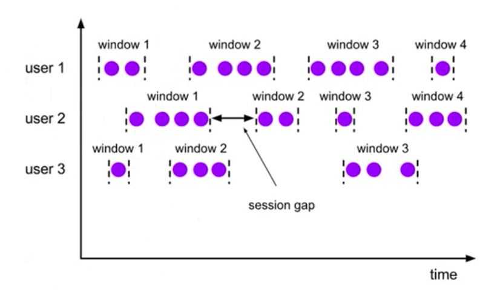
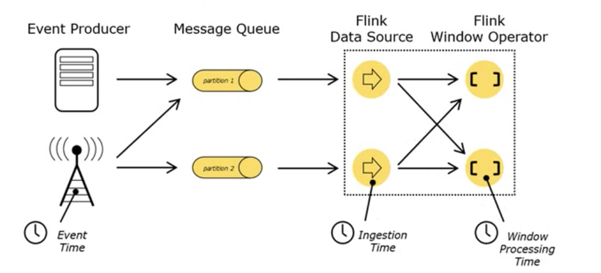
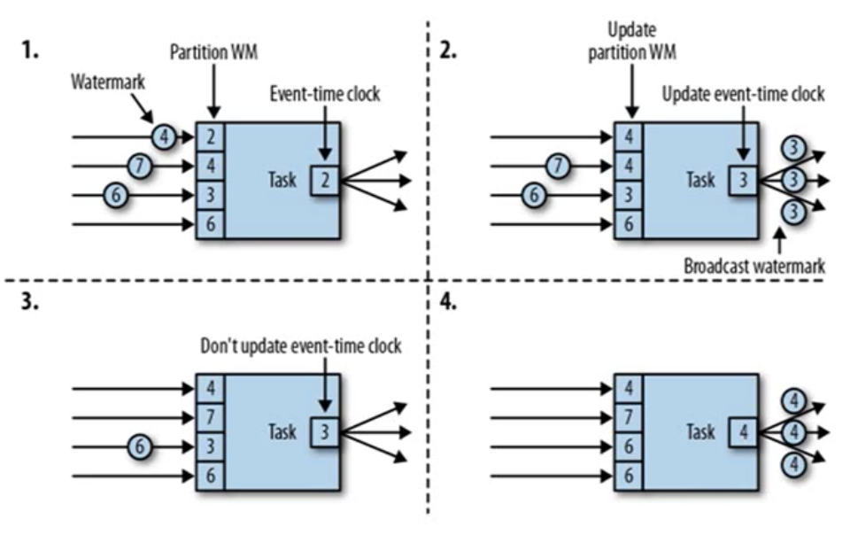

Flink笔记
[toc]
window相关的概念
将无限流切割为有限流的方式，将流数据分发到有限大小的bucket
window类型 - 时间窗口(Time Window) - 滚动时间窗口 - 滑动时间窗口 - 会话窗口 - 计数窗口(Count Window) - 滚动计数窗口 - 滑动计数窗口
滚动窗口 Tumbling Windows

- 固定窗口长度
- 无缝连接, 窗口之间没有重叠
- 时间点是左闭右开 例如[9:00, 10:00), [10:00, 11:00), ...
滑动窗口 Sliding Windows

- 滑动窗口有固定的窗口长度和滑动步长
- 窗口之间可以重叠
会话窗口 Session Windows
 1. 要指定一个session gap, 只要两个数据到来时间超过session gap, 就生成新的窗口
window api
.window方法, 必须在keyBy方法之后使用
各种window api调用如下
// 滚动时间窗口
stream.timeWindow(Time.secondes(15));
// 滑动时间窗口
stream.timeWindow(Time.secondes(15), Time.seconds(5));
// 会话窗口
stream.window(EventTimeSessionWindows.withGap(Time.minutes(10)));
// 滚动计数窗口
stream.countWindow(5);
// 滑动计数窗口
stream.countWindow(10,2);
窗口函数
- 增量聚合函数 incremental aggregation functions 每条数据到来就进行计算, 保持一个简单状态, 还是流处理 ReduceFunction, 包括max, maxBy, min, minBy, sum AggregateFunction
public class WindowTest1 {
public static void main(String[] args) throws Exception {
StreamExecutionEnvironment env = StreamExecutionEnvironment.getExecutionEnvironment();
env.setParallelism(1);
// 从本地socket 7777端口读取数据
// 使用命令行 nc -lk 7777
DataStream<String> inputStream = env.socketTextStream("localhost", 7777);
inputStream.map(line -> {
String[] split = line.split(",");
return new SensorReading(split[0], Long.valueOf(split[1]), Double.valueOf(split[2]));
}).keyBy("id")
.timeWindow(Time.seconds(15))
// 实现一个count
.aggregate(new AggregateFunction<SensorReading, Integer, Integer>() {
private static final long serialVersionUID = -9048126259488589992L;
@Override
public Integer createAccumulator() {
return 0;
}
@Override
public Integer add(SensorReading sensorReading, Integer integer) {
return integer + 1;
}
@Override
public Integer getResult(Integer integer) {
return integer;
}
@Override
public Integer merge(Integer integer, Integer acc1) {
return integer + acc1;
}
}).print();
env.execute();
}
}
运行结果类似
6
3
- 全量窗口函数 full window functions 先把窗口所有数据收集机器, 等到计算的时候遍历所有数据, 类似批处理 ProcessWindowFunction WindowFunction
// WindowFunction
public class WindowTest2 {
public static void main(String[] args) throws Exception {
StreamExecutionEnvironment env = StreamExecutionEnvironment.getExecutionEnvironment();
env.setParallelism(1);
// 从本地socket 7777端口读取数据
// 使用命令行 nc -lk 7777
DataStream<String> inputStream = env.socketTextStream("localhost", 7777);
inputStream.map(line -> {
String[] split = line.split(",");
return new SensorReading(split[0], Long.valueOf(split[1]), Double.valueOf(split[2]));
}).keyBy("id")
.timeWindow(Time.seconds(15))
// 实现一个count, 全窗口函数虽然效率较低, 但是更加灵活
.apply(new WindowFunction<SensorReading, Tuple3<String, Long, Integer>, Tuple, TimeWindow>() {
private static final long serialVersionUID = 7810080565392650440L;
@Override
public void apply(Tuple tuple, TimeWindow window, Iterable<SensorReading> input, Collector<Tuple3<String, Long, Integer>> out) throws Exception {
String key = tuple.getField(0);
Long endTime = window.getEnd();
Integer count = IteratorUtils.toList(input.iterator()).size();
out.collect(Tuple3.of(key, endTime, count));
}
}).print();
env.execute();
}
}
运行结果类似
(sensor_3,1611416235000,6)
(sensor_1,1611416235000,3)
ProcessWindowFunction和WindowFunction的差异
public interface WindowFunction<IN, OUT, KEY, W extends Window> extends Function, Serializable {
// 第二个参数是Window
void apply(KEY key, W window, Iterable<IN> input, Collector<OUT> out) throws Exception;
}
public abstract class ProcessWindowFunction<IN, OUT, KEY, W extends Window> extends AbstractRichFunction {
// 第二个参数是Context, 并且Context包含Window, 因此可以包含更多的信息
public abstract void process(KEY key, Context context, Iterable<IN> elements, Collector<OUT> out) throws Exception;
}
其他api
trigger触发器, 定义window什么时候关闭, 触发计算并输出结果evictor移除器, 定义移除某些数据的逻辑allowedLateness允许延迟时间sideOutputLateData迟到数据放到侧输出流
所谓的迟到, 需要考虑时间语义
时间语义

Event Time: 事件创建的时间 Ingestion Time: 数据进入Flink的时间 Processing Time: 执行操作算子的本地系统时间, 与机器相关
代码如果没有设置, 默认是Processing Time
watermark 水位线
用于衡量事件时间进展的机制, 一般用于处理乱序事件 数据流中的watermark用于表示timestamp小于watermark的数据都已经到达了
watermark用来让程序自己平衡延迟和结果的准确性
watermark的特点 1. watermark是特殊的数据记录 2. watermark必须是单调递增的 3. watermark与数据的时间戳相关
watermark的传递 
- 下游任务会接受所有上游任务的watermark, 称为Partition Watermark
- 所有Partition Watermark中最小的watermark作为event-time clock触发窗口操作
- watermark更新之后会向下游广播
- watermark如果没有更新, 不会向下游广播
watermark对于乱序数据的三重保障机制 1. 乱序时间 2. 延迟时间 3. 侧输出流